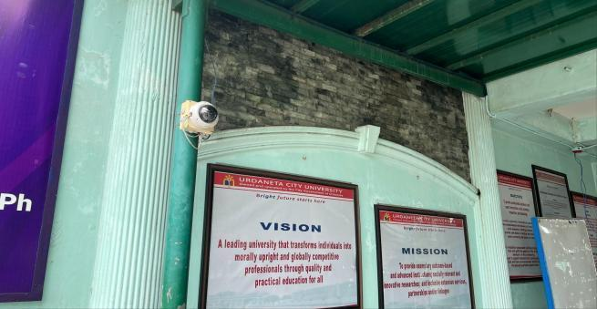
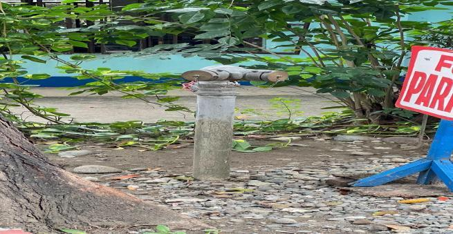
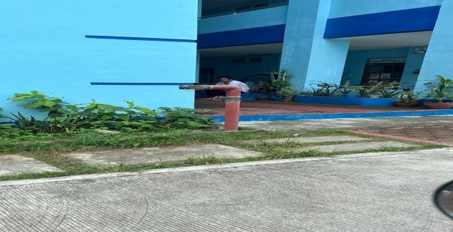
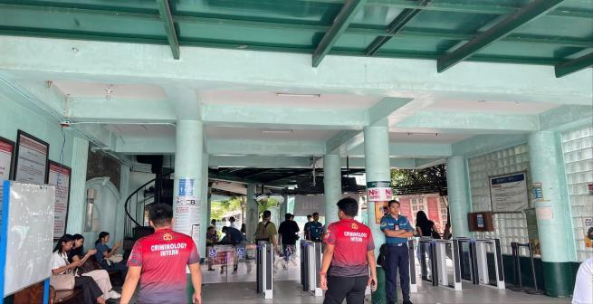

Urdaneta City University (UCU) prioritizes the safety and security of its academic community through the implementation of modern monitoring systems, reliable emergency infrastructure, and efficient identification technologies. These facilities collectively support a secure and well-managed campus environment, ensuring the protection of students, faculty, staff, and visitors while promoting confidence and peace of mind across the university.

The university maintains a comprehensive Closed-Circuit Television (CCTV) system strategically installed across key areas of the campus. These surveillance cameras provide continuous monitoring of entry points, academic buildings, open spaces, and other high-traffic locations. The CCTV system serves both as a preventive security measure and as a valuable resource for incident review and investigation. Through real-time monitoring and recorded footage, campus authorities are able to respond quickly and effectively to emergencies, thereby strengthening overall campus safety.

Fire Pump 1 is an essential component of the university’s fire protection system. It ensures a reliable and immediate water supply during fire emergencies, enabling first responders to quickly suppress potential fires. This system plays a critical role in minimizing property damage and protecting the lives of members of the university community.

To further reinforce fire safety preparedness, Fire Pump 2 serves as a backup system to Fire Pump 1. This redundancy ensures that firefighting capabilities remain operational even if one pump experiences technical issues. The presence of a secondary pump significantly enhances the university’s resilience and readiness in responding to fire-related incidents.

The university also utilizes an advanced ID pass system designed to strengthen campus security and improve operational efficiency. This system regulates campus access by ensuring that only authorized individuals are permitted to enter specific facilities and areas, thereby reducing potential security risks.
A notable feature of the system is its integration with QR code technology. When students tap their ID cards on the QR code reader, their name and photo immediately appear on the monitor, allowing security personnel to verify identities quickly and accurately. This real-time identification process enhances safety while ensuring a smooth and convenient experience for students accessing campus facilities and services.
By integrating surveillance technology, fire safety infrastructure, and digital identification systems, Urdaneta City University demonstrates its strong commitment to maintaining a secure, efficient, and student-centered campus environment. These systems not only safeguard the university community but also reinforce accountability, trust, and a shared sense of responsibility among its members.